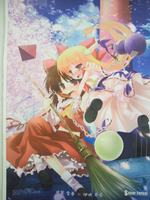
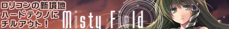

| |||||||||||||||||||||||||||||||||||||||||||||||||||||||||||||||||||||||||||||||||||||||||||||||||||||||||||||||||||||||||||||||||||||||||||||||||||||||||||
|
| |||||||||||||||||||||||||||||||||||||||||||||||||||||||||||||||||||||||||||||||||||||||||||||||||||||||||||||||||||||||||||||||||||||||||||||||||||||||||||
| Top - new永き夜のロンド - 紅き月のアリア - Lyrics - Moblie - Infomation - About us - Diary - 東方キャラったー | |||||||||||||||||||||||||||||||||||||||||||||||||||||||||||||||||||||||||||||||||||||||||||||||||||||||||||||||||||||||||||||||||||||||||||||||||||||||||||
|
■東方アレンジ「東方電撃波動⑨」 3月14日(日) 例大祭にて初頒布予定 スペース 東3 へ-04a ■このCDをチェックした人は、こんなCDも見ています 「黄昏シューティングスター」 例大祭で同時頒布です  委託はじまりました↓ ■東方電撃波動⑨ 収録曲詳細 mp3試聴
■その他の情報 CDジャケット記載のボーカルに誤植がありました Track05「亡き巫女の為のセプテット」ですが、ボーカルは"なつみ"のみになります vocal：なつみ さゆり× vocal：なつみ○ 訂正してお詫びいたします イラストは冬コミ作品でも描いてもらったロンドさん(タラコスパ)です  そしてもう１面は とりあえず(仮)：とろろさん 「東方電撃波動⑨」ですが、初の縦長特殊ジャケットという事で 記念に1mくらいのタペストリーを作ってみました なかなか綺麗です  今回のジャケット、作るのが大変なので再販しません ちゃいさんはゆづか姫なのか？ ■参加して下さったゲスト様のサイト 3Lさん - 3L - Alternative ending：mikoさん  A-One：Shihoriさん Yassieさん  IOSYS：ARMさん  sun3 FielD：sun3さん  Rolling Contact：天音さん  Sound Online：矢鴇つかささん  Iemitsu：JiNG*da*LaWさん   Reliance：Tone：流歌さん  ■バナーなど
| |||||||||||||||||||||||||||||||||||||||||||||||||||||||||||||||||||||||||||||||||||||||||||||||||||||||||||||||||||||||||||||||||||||||||||||||||||||||||||
| |||||||||||||||||||||||||||||||||||||||||||||||||||||||||||||||||||||||||||||||||||||||||||||||||||||||||||||||||||||||||||||||||||||||||||||||||||||||||||